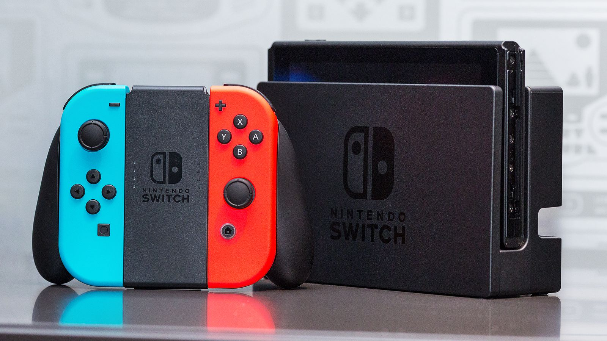
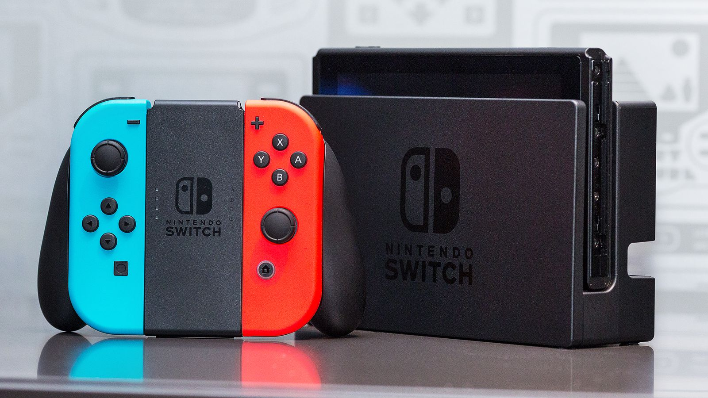

Welcome to my website!
I hope that you can learn about me through this website :D
About Me!

Hi my name is Moses Cho and I'm an 8th grader going to Olympus Junior High School.
One interesting fact about me is that I moved here from South Korea just over an year ago.
I lived in Korea for almost 11 years and I decided to reside back to America.
My favorite things to do are playing games on my Nintendo Switch, and doing sports and also watching sports on TV.
What I love about Korea

One thing that I love about Korea is the culture.
Korea is all about respecting your elders.
Another thing that I love about Korea is the food (of course).
My favorite Korean food is Bulgogi, which is basically a Korean barbeque (I recommend that you try it)

My Favorite Things to do!
I like to
- Play games (I like to especially play games on my Nintendo Switch)
- Watch TV (like sports, Netflix, etc)
- Hanging out with my friends
 

I love to watch TV. I watch
- Sports such as basketball (NBA, March Madness) and Soccer (English Premier League and UEFA Champions League)
- Movies and TV series on Netflix or Amazon Prime